Inspections that stand up when someone asks.
Field inspections generate arguments. Whether the work was really done on site. Whether a critical item passed. Who signed it off, and whether that person should have been allowed to. Which version of the checklist was actually used. Each of those is settled by a record, and the record is usually the weakest part of the process.
FieldCheck is built around that record. An inspector works through a checklist on a phone with no signal, attaches photographs and a signature, and the answers sync when the connection returns — without a retry ever creating a duplicate. A failed critical question fails the inspection whatever the overall score says. The reviewer cannot be the inspector, and whoever raised a corrective action cannot be the one who closes it. Template versions are frozen on publication, so an inspection always shows the exact version it was run against.
Inspectors keep working offline. Answers sync when the connection returns, and a retry never creates a duplicate.
A failed critical question fails the inspection, whatever the overall score says.
The reviewer cannot be the inspector, and the person who raised an action cannot be the one who closes it.
Template versions are immutable. An inspection always shows the exact version it was run against.
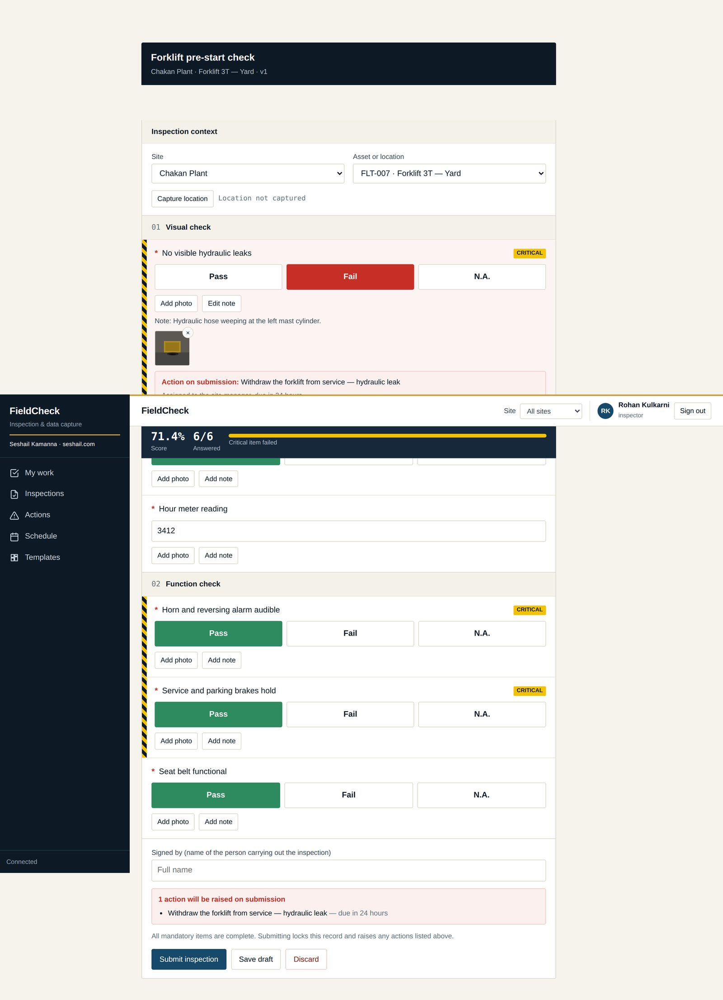
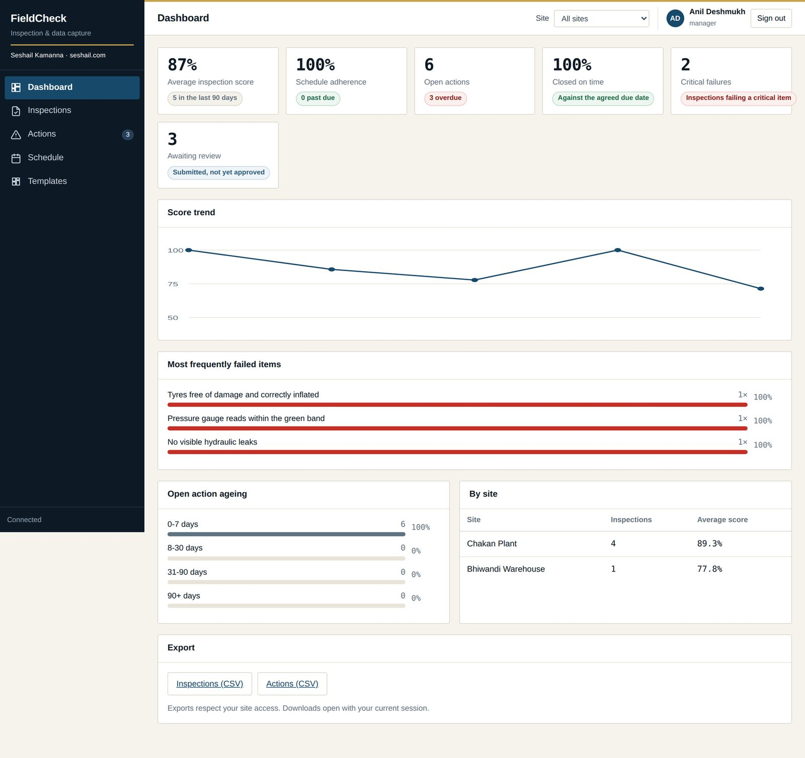
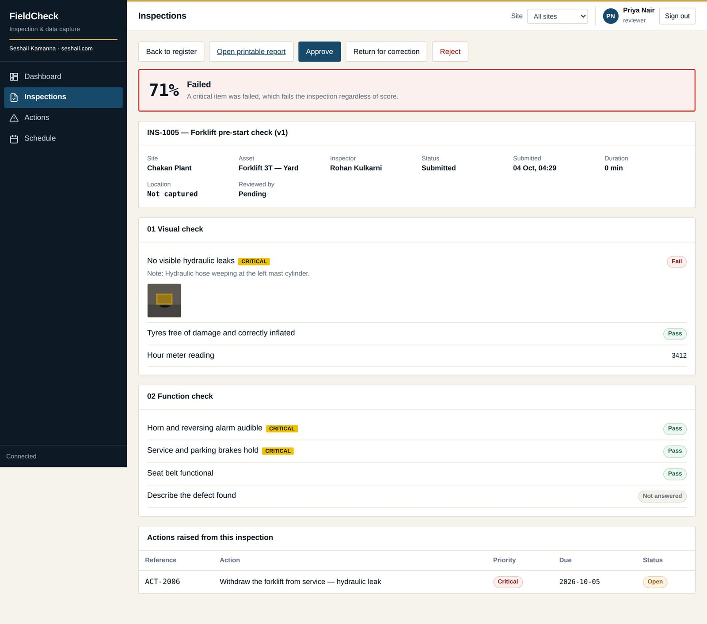
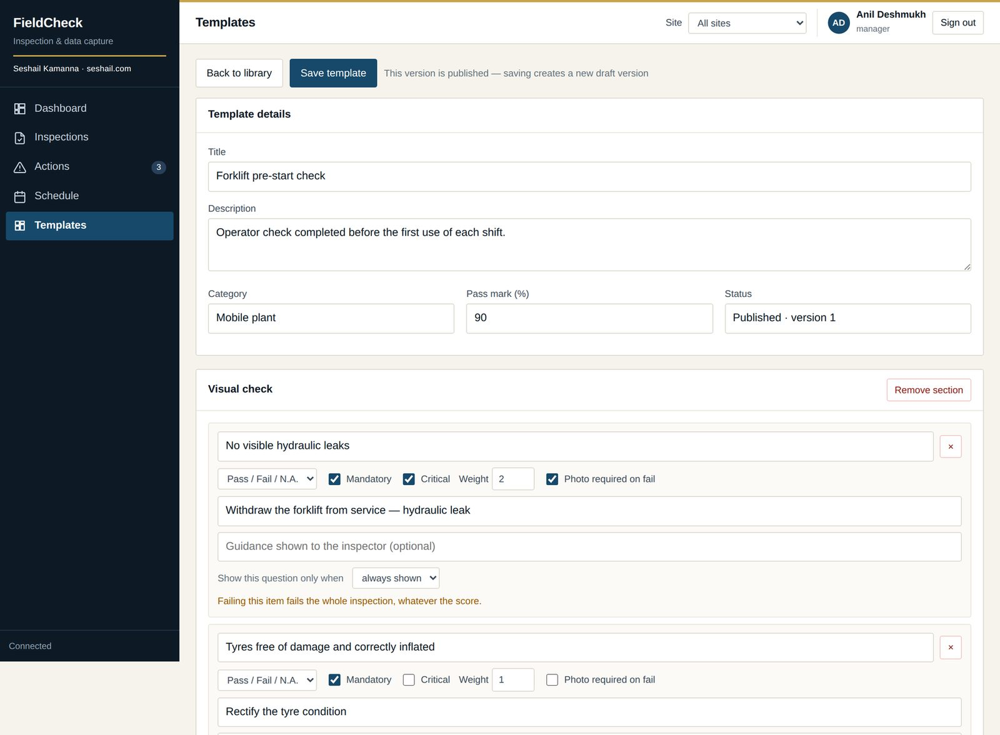
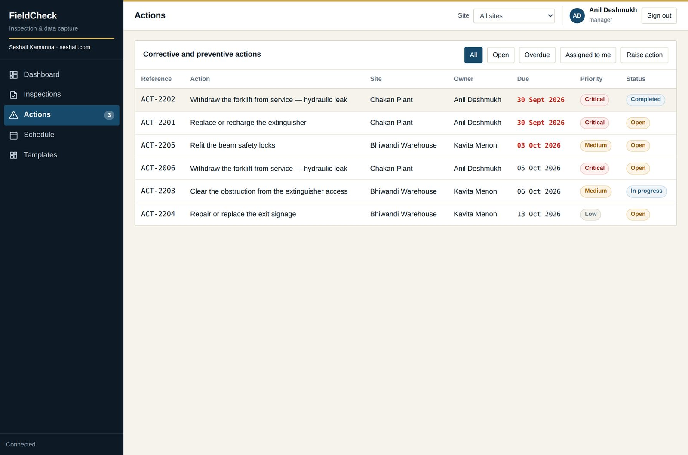
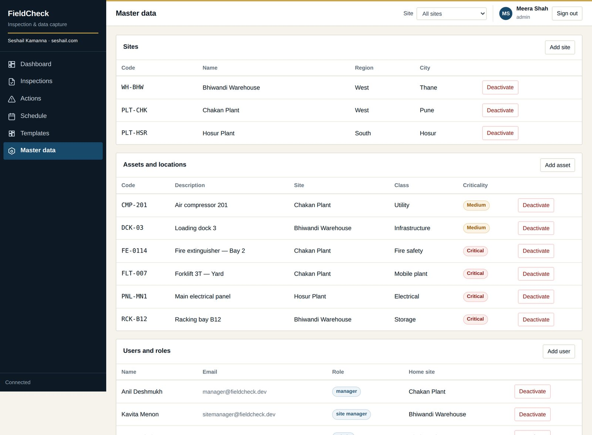
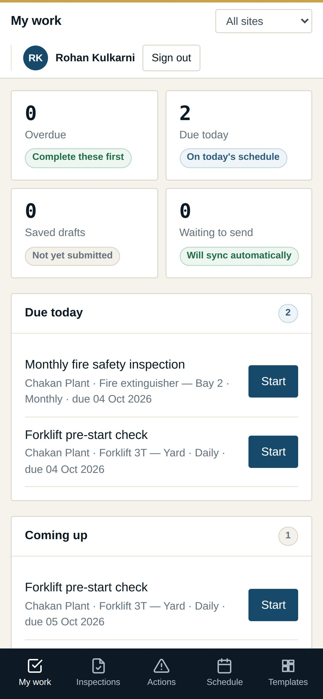
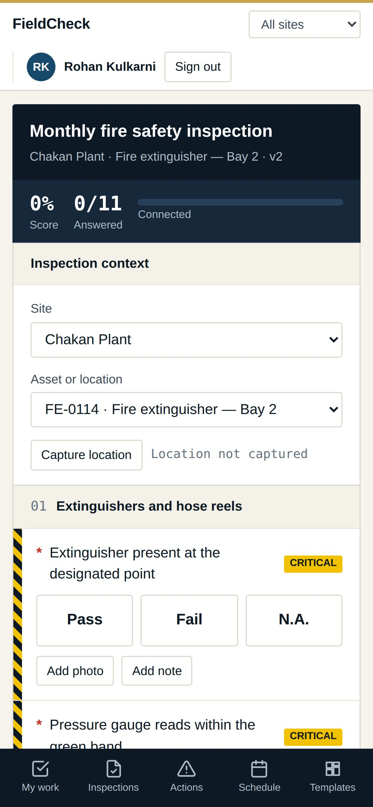
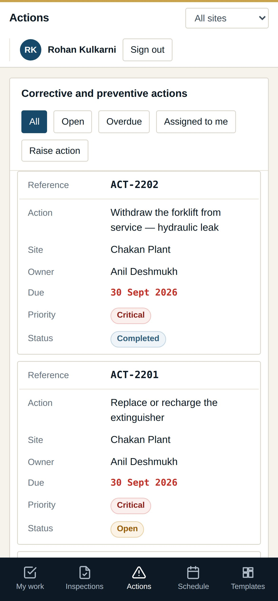
Each has owners, hand-offs, and the rule that stops it being short-circuited.
Template authoring, review and publication. Publishing freezes the version.
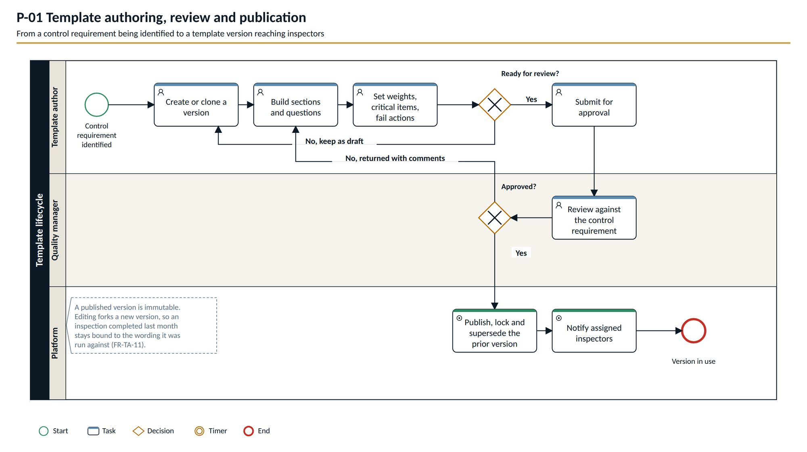
Scheduling and execution. Run on site, capture evidence, sync online or not.
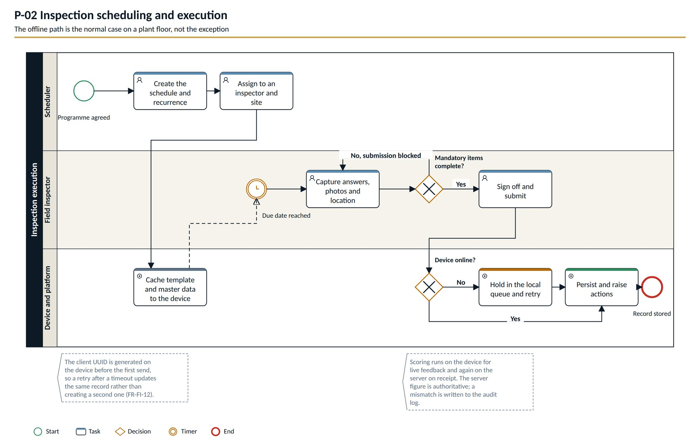
Review, approval and record closure. The person who did the work does not sign it off.
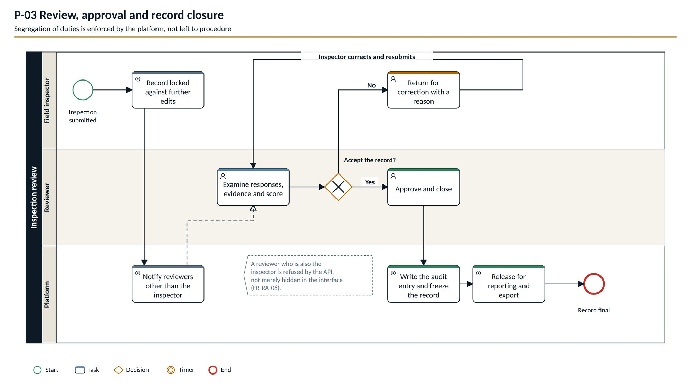
Corrective and preventive action lifecycle. Closing needs a different person from the one who raised it.
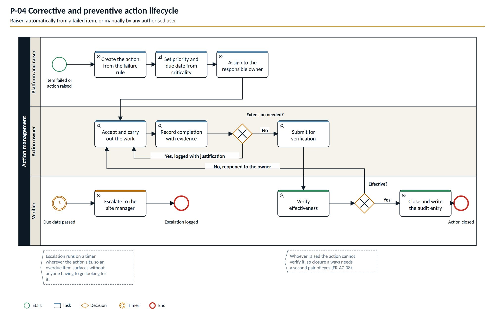
On a narrow screen, drag the diagram sideways.
The application runs as a single file and is published through GitHub Releases, so the link below always points at the current version. The two documents set out what it must do and how each role uses it.
Single executable. No installer and no IT involvement — data is kept in your user profile using SQLite.
32 MB · .exeDownloadScope, 17 roles, functional and non-functional requirements, four BPMN processes and multi-tenancy. BRD-INSP-003 v0.3.
2 MB · PDFDownloadTask-by-task guidance for inspectors, reviewers, action owners and administrators, with a troubleshooting section. UM-INSP-002 v1.1.
2 MB · PDFDownloadOne site or a small team on a LAN, no IT involvement. SQLite, data in the user profile.
A pilot or a department. PostgreSQL optional.
An organisation-wide rollout with backups and monitoring.
Several customers on one platform.
Stated plainly, because a product described as complete when it is not wastes everybody's first meeting.
FieldCheck is an independent product and is not affiliated with or endorsed by any third-party inspection software vendor. Supporting documents are marked confidential and are shared on request for evaluation.